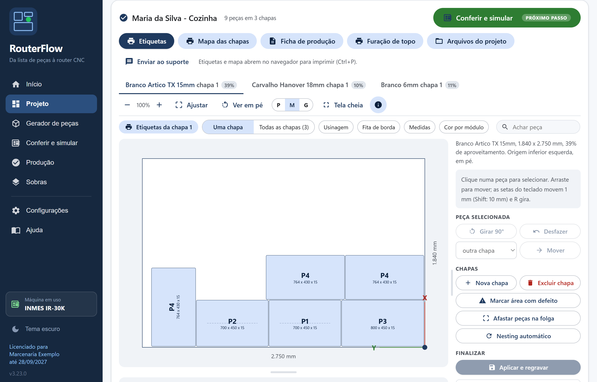
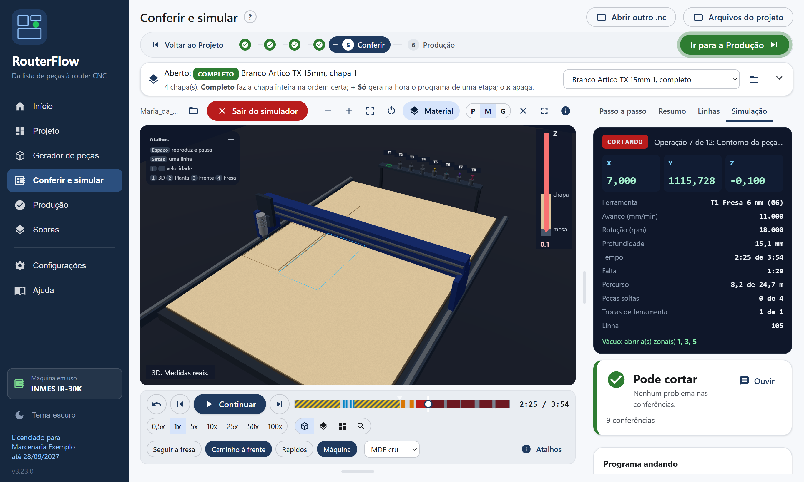
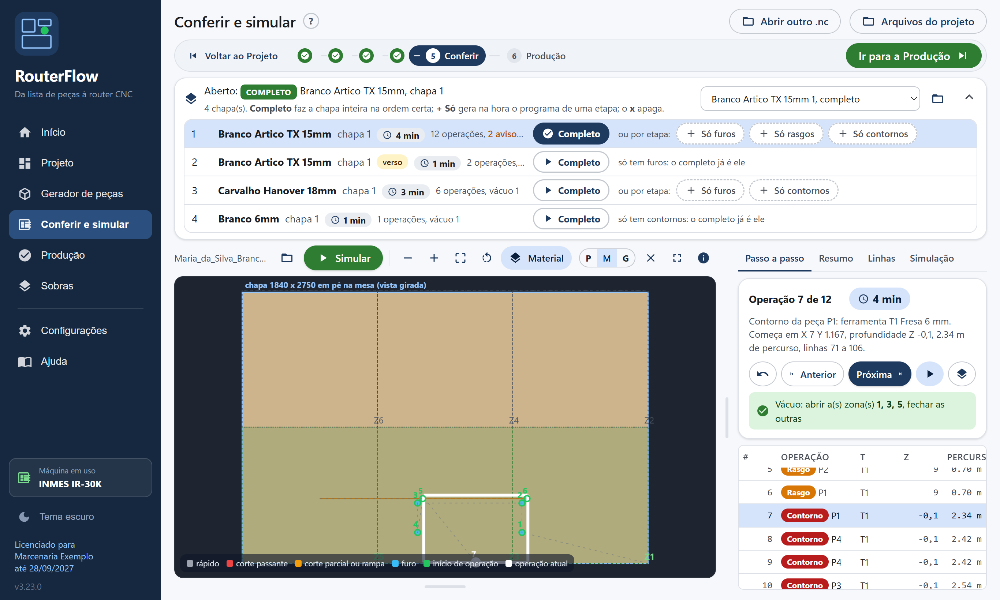
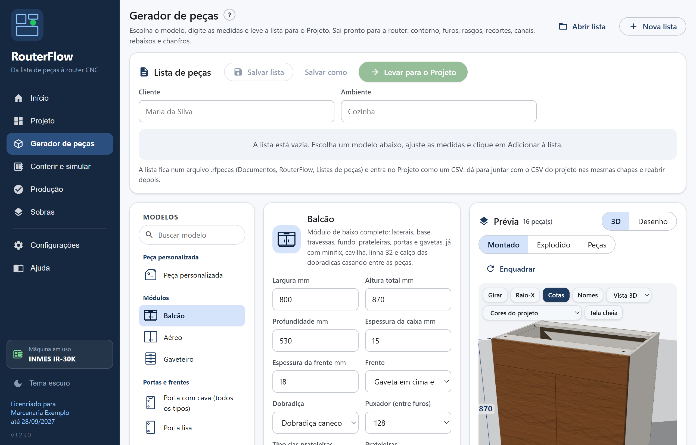
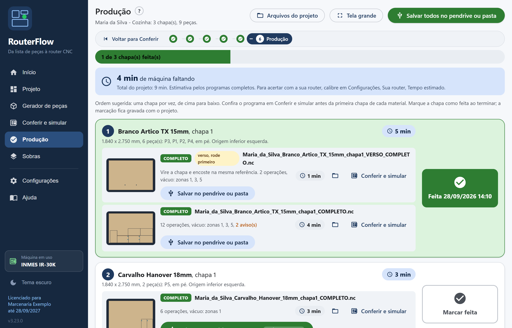
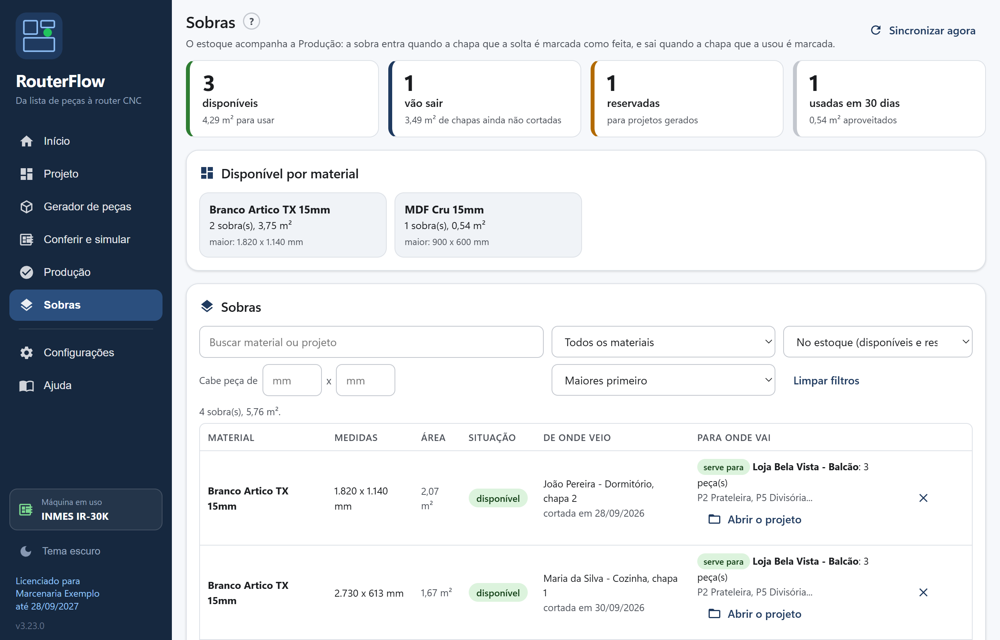
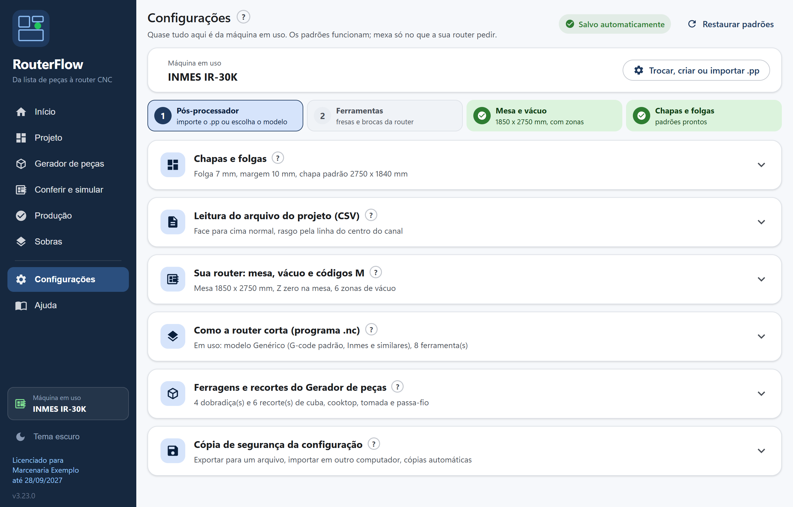

Para marcenarias com router CNC
Do projeto à router sem digitar peça, sem plugin e sem CAM.
Você exporta a lista de peças do seu software de projeto. O RouterFlow monta as chapas, gera o programa pronto para a sua router e imprime as etiquetas, tudo com o nome do cliente. Em minutos.
- Programa da router pronto para cada chapa: furos, rasgos e contornos, na ordem certa.
- Chapa bem aproveitada: encaixe automático e as sobras do estoque usadas antes de abrir chapa nova.
- Chão de fábrica organizado: etiquetas, mapa das chapas, ficha de produção e tempo de máquina.
Mande o CSV de um projeto seu pelo WhatsApp e veja as chapas e os programas prontos. Windows 10 ou 11.

O problema que o RouterFlow resolve
A router CNC não lê o projeto do seu software de móveis. Entre o projeto pronto e a chapa cortada, alguém precisa transformar cada peça em programa. É aí que se perde tempo, chapa e dinheiro.
Hoje, sem o RouterFlow
- Alguém digita peça por peça no CAM, e uma medida errada vira chapa perdida.
- Plugin pago para exportar o DXF, outro para a furação, com mensalidade e internet obrigatória.
- Encaixe feito no olho: sobra chapa e sobra retalho que ninguém acha depois.
- Etiqueta à mão ou em planilha, e peça trocada na hora de montar.
- Ninguém sabe quanto tempo de máquina o projeto vai levar.
Com o RouterFlow
- A lista que o software de projeto já exporta de graça vira chapa e programa. Ninguém digita nada.
- Um programa só, sem plugin e sem CAM. Quem usa o Aspire continua usando, pelo DXF.
- Encaixe automático, e as sobras do estoque entram antes de abrir chapa inteira.
- Etiqueta de cada peça com cliente, ambiente, medidas e fitas de borda.
- Tempo estimado de cada chapa e de quanto falta para terminar o projeto.
Para quem é
Marcenarias e fábricas de móveis planejados que têm router CNC e desenham num software de projeto que exporta CSV. MDF, MDP e compensado, com ou sem mesa de vácuo.
O que substitui
O plugin pago de exportação em DXF, o CAM para montar os programas, a digitação de peças e a planilha de etiquetas.
O que você precisa
Um computador com Windows e o CSV do plano de corte do seu software de projeto. Uma planilha do Excel com as medidas também serve.
Como funciona
Configure a sua máquina uma vez (ferramentas e o jeito que ela lê o programa). Depois, todo projeto é assim:
- 1
Exporte a lista de peças
No seu software de projeto, o mesmo CSV do plano de corte, com furos, rasgos e fitas. Ou uma planilha do Excel. Arraste para o RouterFlow.
- 2
As chapas saem montadas
Separadas por material e espessura, com o melhor encaixe e as sobras do estoque. Quer mudar? Arraste a peça e pronto.
- 3
Confira e mande para a router
Em Conferir e simular, veja a fresa cortando a chapa em 3D, com o tempo e o veredito: pode cortar, confira ou não corte. Na Produção, salve no pendrive ou mande pela rede.
- 4
Imprima e corte
Etiquetas, mapa das chapas e ficha de produção. Na máquina, marque cada chapa feita e veja quanto falta.

Quer ver cada tela e cada botão? O manual completo mostra tudo, do primeiro acesso à chapa cortada.
O que sai de cada projeto
Tudo com o nome do cliente e do ambiente, lido do próprio CSV. Pasta, arquivos e impressos seguem o mesmo padrão.
Programas da router (.nc)
Um .nc por chapa com furos, rasgos e contornos em sequência, rampa de entrada e zonas de vácuo. O nome do arquivo diz o que ele faz: completo, só furos, só rasgos ou só contornos. Verso espelhado quando a peça tem usinagem atrás. Furos, rasgos e contornos separados se você preferir rodar por etapas.
DXF por material
Todas as chapas do material num arquivo só, já na orientação e na origem da sua mesa. Layers com nomes fixos para quem usa o Aspire ou outro CAM.
Etiquetas das peças
Cliente, ambiente, módulo, peça, material, IDs e código, medidas e o desenho da peça com as fitas de borda e a face de alinhamento. Etiqueta de 100 x 60 mm para impressora de etiquetas, ou oito por folha A4.
Mapa das chapas
Uma folha por chapa com as peças numeradas, medidas, sentido do veio e a sobra que fica. Fica ao lado da máquina para identificar cada peça na saída.
Ficha de produção
Materiais, chapas, aproveitamento, metros de fita por cor, ferragens do projeto, arquivos gerados e os avisos a conferir antes de cortar.
Listas em planilha
Lista de peças, fitagem por aresta e ferragens em CSV, para abrir no Excel ou no seu sistema.


Feito dentro da oficina
Os recursos na ordem do menu do programa: Projeto, Gerador de peças, Conferir e simular, Produção e Sobras.
Projeto: chapa bem aproveitada
Doze combinações de estratégia por material, fica a que gasta menos chapa e deixa a maior sobra. Respeita veio, folga e margem, desvia de áreas com defeito e usa as sobras do estoque antes de abrir chapa inteira. Tampo em L, peça com arco e letra entram pela forma: as menores ocupam o canto vazio.
Projeto: qualquer lista de peças
O CSV do software de projeto, uma planilha do Excel ou a lista de outro programa: uma janela mostra as colunas do arquivo e você diz qual é qual, e o RouterFlow lembra. Vários arquivos de uma vez entram nas mesmas chapas.
Editor de chapas
Origem em qualquer canto, chapa deitada na tela, eixos desenhados. Arraste, gire, troque peças de chapa, marque defeitos e regrave tudo junto: DXF, programas, etiquetas e mapa. O projeto fica salvo para reabrir.
Gerador de peças
Sem lista? Escolha entre 50 modelos e digite as medidas: porta com dobradiça, porta com cava de todos os tipos, provençal, porta com placa encaixada, canto curvo com ripas e montantes, pé revestido, tampo orgânico, cava 45, porta com vidro, gaveta pelo vão, lateral com linha 32, tampo com cuba e cooktop, painel ripado, ondulado e em lâminas, frente curva com cortes de flexão, muxarabi, texto em V com as fontes do Windows, letras vazadas e letra caixa, banco e mesa encaixados. Sai com recortes, rebaixos, relevo 3D, V-carve e encaixes com dog-bone, sem desenhar. E quando nenhum modelo serve, a peça personalizada: arraste os nós, faça curvas e cantos, e ponha furos, rasgos, cortes, rebaixos e dobradiças onde quiser.
Módulo completo pelas medidas
Balcão, aéreo e gaveteiro inteiros: laterais, base, travessas, fundo, prateleiras, portas e gavetas, com minifix, cavilha, linha 32 e o calço da dobradiça casando entre as peças, e a lista de ferragens pronta.
Prévia 3D das peças
Veja o móvel montado, explodido ou peça por peça antes de cortar, com luz, sombra e material, e o que a router faz cortado de verdade: furos, rasgos, cavas, chanfros, a onda do painel e a frente curva dobrada. Raio-X mostra a estrutura por dentro, cada peça numa cor, e as cotas aparecem no móvel. Nos cortes especiais, o 3D mostra a estrutura que segura: as espinhas do painel em lâminas e as cambotas da frente curva.
Conferir e simular
A fresa corta a chapa em 3D na tela, de 1x a 100x, com o material saindo e o programa andando junto. No fim, o veredito: pode cortar, confira ou não corte, com o ponto exato do problema. Tem também o passo a passo sobre a mesa, a tradução do G-code em português e as verificações: rápido dentro da chapa, fundo demais na mesa, fora da área da máquina.
Programa da router sem CAM
Furos, rasgos e contornos com deslocamento pelo raio da fresa, passes em profundidade com rampa, verso antes da face e zonas de vácuo. Peças pequenas cortadas primeiro e pele fina para elas não soltarem. Modo corte no ar para o primeiro teste.
Produção
Modo operador: as chapas na ordem de corte, o tempo de máquina, a miniatura de cada programa, pendrive, pasta de rede ou FTP e a marcação de chapa feita. O Início mostra onde você parou e quantas chapas faltam.
Sobras
A router corta cada retalho alinhado e sai a etiqueta. A sobra entra no estoque quando a chapa é marcada como feita, fica reservada quando um projeto vai usar e sai quando a chapa que a usou é cortada.
Perfis de máquina
Cada router com sua mesa, vácuo, ferramentas e pós-processador. Troque de máquina pelo menu lateral, crie um perfil novo por cópia ou importe o arquivo .pp do Aspire. Modelos prontos para Inmes, Mach3, GRBL e Fanuc.
Ajuda dentro do programa
Manual com busca, suporte pelo WhatsApp com o envio do projeto para o consultor ver do mesmo jeito que você, e atualização automática: cada versão nova é baixada e instalada pelo próprio programa.





Tudo o que você leva
Um programa só, completo, para toda licença. Não tem versão básica, módulo extra nem função que se paga à parte.
Projeto e chapas
- Leitura do CSV do plano de corte do Promob, com contorno, fitas, furos, rasgos, cliente e ambiente
- Planilha do Excel e listas de outros programas, com a janela para dizer qual coluna é qual
- Vários projetos juntos nas mesmas chapas
- Encaixe automático com doze estratégias por material, veio, folga, margem e áreas com defeito
- Peça em L, com arco ou letra encaixada pela forma, não pelo retângulo
- Editor de chapas: arrastar, girar, trocar de chapa, defeitos e regravar tudo junto
- DXF por material com layers fixas, para quem continua no Aspire
Gerador de peças
- 50 modelos pelas medidas e a peça personalizada desenhada à mão
- Portas com dobradiça, cava, frisos, provençal, vidro e fecho toque
- Gaveta completa pelo vão, lateral com linha 32, prateleiras e nichos
- Tampo com cuba, cooktop, tomada e passa-fio
- Painel ripado, ondulado 3D, em lâminas com espinhas e frente curva com cortes de flexão
- Texto em V e letras com as fontes do Windows, móveis encaixados com dog-bone
- Balcão, aéreo e gaveteiro completos, com minifix, cavilha, calço da dobradiça e a lista de ferragens
- Prévia em 3D: montado, explodido e peça por peça
Programa da router
- Um .nc por chapa, sem CAM, no pós-processador da sua máquina
- Modelos prontos para Inmes, Mach3, GRBL e Fanuc, e importação do .pp do Aspire
- Furos, rasgos, recortes, rebaixos, chanfro 45, canais, relevo 3D e V-carve
- Contorno pelo raio da fresa, rampa de entrada, peças pequenas primeiro e pele fina
- Verso espelhado, zonas de vácuo, corte da sobra e linha comum
- Corte no ar para o primeiro teste e vários perfis de máquina
Conferir e simular
- Simulador 3D: a fresa corta a chapa na tela, de 1x a 100x
- Veredito antes de cortar: pode cortar, confira ou não corte, com o ponto do problema
- Passo a passo sobre a mesa e tempo estimado de máquina
- Cada linha do G-code traduzida em português
- Abre também programas feitos no Aspire ou em outro CAM
Produção e sobras
- As chapas na ordem de corte, com a miniatura e o tempo de cada programa
- Pendrive, pasta de rede ou FTP da máquina
- Marcação de chapa feita e o Início mostrando onde você parou
- Estoque de sobras que acompanha a produção e é usado antes de abrir chapa nova
Impressos
- Etiquetas 100 x 60 mm ou 8 por A4, com cliente, módulo, medidas, fitas e desenho
- Mapa das chapas, uma folha por chapa, com as peças numeradas e a sobra
- Ficha de produção com materiais, aproveitamento, fita e ferragens
- Folha de furação de topo e listas em planilha
Incluído na licença
- 2 computadores da mesma empresa: o do projeto e o da máquina
- Todas as atualizações do ano, instaladas pelo próprio programa
- Suporte pelo WhatsApp, inclusive para configurar a sua máquina
- Envio do projeto ao suporte, que abre do mesmo jeito que você vê
- Manual completo com busca, dentro do programa e no site
- Trabalha sem internet na hora de cortar
Preço da licença
Um preço só, igual para todo mundo. Sem adesão, sem mensalidade e sem módulo extra.
Licença anual, 2 computadores
R$ 2.490/ano
- PIX à vista com 10% de desconto: R$ 2.241
- Cartão de crédito em até 12x, com o acréscimo da operadora
- 2 computadores da mesma empresa: o do projeto e o da máquina
- Computador a mais na mesma empresa: R$ 1.245 por ano (PIX R$ 1.120,50)
- Todas as atualizações do ano e suporte pelo WhatsApp incluídos
Dá R$ 207,50 por mês, menos de R$ 7 por dia. Uma cobrança só por ano.
Por que o valor é justo
Ele faz o trabalho de quatro ferramentas. Para sair do projeto e chegar à router, a oficina costuma juntar um plugin para exportar o DXF, um CAM para fazer o programa, um otimizador de corte e um gerador de peças. O RouterFlow faz as quatro coisas num programa só.
| Plugin de exportação em DXF do software de projeto | R$ 5.800 + R$ 180/mês |
| CAM para o programa da router (Aspire) | US$ 1.995 |
| Otimizador de plano de corte | mais de R$ 1.000 |
| Gerador de peças pelas medidas | R$ 1.397 + R$ 397/ano |
| Juntando tudo, no primeiro ano | mais de R$ 20.000 |
| RouterFlow, tudo incluído | R$ 2.490 por ano |
Ele se paga em menos de três meses. Numa oficina que corta 50 chapas por mês a R$ 280:
| Aproveitamento da chapa (3% a mais) | R$ 5.040 |
| Tempo de programação (8 h por mês) | R$ 3.840 |
| Retrabalho evitado (meia chapa por mês) | R$ 1.920 |
| Retorno por ano | R$ 10.800 |
| Licença por ano | R$ 2.490 |
Ele custa pouco por chapa. São R$ 4,15 por chapa cortada nessa oficina. Nove chapas de MDF pagam o ano inteiro, e só o aproveitamento a mais devolve dezoito.
As regras são iguais para todos. O mesmo preço para a oficina pequena e para a fábrica, com o programa completo. O computador da máquina não paga à parte.
Dúvidas frequentes
O RouterFlow funciona com o CSV do Promob?
Sim. Ele lê o CSV do plano de corte exportado pelo Promob, com o contorno de cada peça, as fitas de borda, os furos, os rasgos, o cliente e o ambiente. Não precisa de plugin pago nem de internet para exportar. Também aceita uma lista simples de peças de qualquer outro software, do Excel ou do Corte Certo.
Preciso do Aspire ou de outro CAM?
Não. O RouterFlow gera o programa .nc de cada chapa direto para a router, com furos, rasgos e contornos. Quem prefere continuar no Aspire ou em outro CAM usa o DXF por material, que sai com as layers no padrão de sempre.
Funciona na minha router?
O programa sai pelo pós-processador da sua máquina. Há modelos prontos para Inmes, Mach3, GRBL e Fanuc, e você pode importar o arquivo .pp do Aspire que já usa. O modo corte no ar serve para o primeiro teste com a fresa elevada, sem chapa.
Precisa de internet para usar?
Não para trabalhar. A licença é confirmada pela internet de vez em quando e as atualizações são baixadas pelo próprio programa, mas gerar chapas, DXF e programas funciona sem conexão.
Quanto custa?
R$ 2.490 por ano, com 2 computadores da mesma empresa, uma cobrança só por ano. No PIX à vista tem 10% de desconto, R$ 2.241. No cartão de crédito, em até 12x com o acréscimo da operadora do cartão. Cada computador a mais na mesma empresa custa R$ 1.245 por ano. Atualizações e suporte pelo WhatsApp incluídos.
Quantos computadores posso usar?
A licença vale para 2 computadores da mesma empresa, normalmente o do projeto e o que fica do lado da máquina. Cada computador a mais na mesma empresa custa R$ 1.245 por ano (R$ 1.120,50 no PIX). Cada computador recebe a própria chave, com o CNPJ da empresa.
Tem mensalidade ou adesão?
Não. É uma cobrança só por ano, com todas as atualizações e o suporte incluídos. Não tem taxa de adesão, módulo extra nem função que se paga à parte.
Como ativo a licença?
Instale, abra Ajuda, Licença, e copie o código da máquina. Envie pelo WhatsApp com a razão social, o CNPJ, o e-mail e o telefone da empresa. Você recebe a chave, cola e clica em Ativar. Sem cadastro.
Como peço ajuda?
Dentro do programa, em Ajuda: o manual com busca e a aba Suporte, com o WhatsApp do Consultor RouterFlow e o botão que manda o projeto aberto para ele olhar do mesmo jeito que você vê. Cada aviso do projeto também diz o que fazer e leva ao lugar certo.
Quais os requisitos?
Windows 10 ou 11, 64 bits. O instalador cuida do componente WebView2 do Windows, se faltar. Funciona no computador do projeto e no computador da máquina.
Sempre melhorando
O que chegou em cada atualização, da mais nova para a mais antiga. Quem já tem o RouterFlow recebe tudo isso sozinho.
Versão 3.23.0Conferir e simular cabe na tela do notebook, etiquetas por chapa05/10/2026
- Conferir e simular sem rolar a tela: lista das chapas com rolagem própria, desenho até o fim da janela e a faixa dos passos com Voltar ao Projeto e Ir para a Produção.
- Etiquetas da chapa logo abaixo das abas das chapas, busca nos modelos do Gerador de peças e clique na linha do histórico para reabrir o projeto.
- Programa com linhas numeradas mostra o tipo certo de cada operação (o só furos aparecia como contorno e rasgo), e a fresa invertida não cobre mais a borda da porta no desenho.
Versão 3.22.4Simulador sem parada misteriosa nas trocas de ferramenta02/10/2026
- Na troca de ferramenta e na espera do spindle, um aviso no alto do desenho diz o que a máquina está fazendo e quanto leva.
- A parada passa em cerca de 1 segundo na tela; o relógio continua contando o tempo real da máquina.
- Na linha do tempo, as paradas aparecem listradas, e o painel da controladora mostra TROCA.
Versão 3.22.3Impressos com a marca, etiqueta sem página em branco e editor mais limpo02/10/2026
- Etiqueta 100 x 60 sem a página em branco no começo, com a logo, medidas sem ,0, nome comprido em duas linhas e a cópia da peça (2 de 3).
- Mapa, ficha e furação de topo com a logo e o nome RouterFlow; o botão de cada impresso refaz o arquivo no formato novo, até em projeto antigo.
- Editor de chapas: Usinagem, Fita de borda e Medidas começam desligados, o rasgo sai reto e a fita é um traço fino por dentro da borda.
Baixar a última versão
O instalador é o mesmo para instalar do zero e para atualizar. Depois de instalado, o programa se atualiza sozinho.
Procurando a versão mais recente...
Baixar o instalador (.exe)Windows 10 ou 11, 64 bits. O instalador cuida do componente WebView2 do Windows, se faltar.
Como instalar e ativar
- Baixe e execute o instalador. Se o Windows mostrar "O Windows protegeu o computador", clique em "Mais informações" e depois em "Executar assim mesmo". O aviso aparece para qualquer programa novo que ainda não tem reputação no Windows.
- Abra o RouterFlow, vá em Ajuda, Licença, e copie o código da máquina.
- Envie o código pelo WhatsApp com a razão social, o CNPJ, o e-mail e o telefone da empresa. O botão da própria tela já monta a mensagem.
- Cole a chave recebida e clique em Ativar. Sem cadastro. Internet só de vez em quando, para confirmar a licença.
Fale com o suporte
Consultor RouterFlow: demonstração, licença, renovação e ajuda para configurar a sua máquina.
Atendimento em horário comercial. A chave costuma sair em poucos minutos depois da confirmação do pagamento.